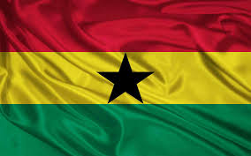

David Ofosu Amoah
About Me
My name is David Ofosu Amoah. I am from Accra, Ghana. I am currently studying web development at BYU-Idaho. I love learning new things, especially technology. In my free time, I enjoy watching football, watching videos online, and spending time with family.
Accra, Ghana

Ghana is a great country in sub-Saharan Africa. It is known for its rich culture, history, and natural beauty. Some of the popular tourist attractions in Ghana include Kakum National Park, Cape Coast Castle, and Mole National Park. Ghana is also famous for its music, dance, and delicious cuisine.